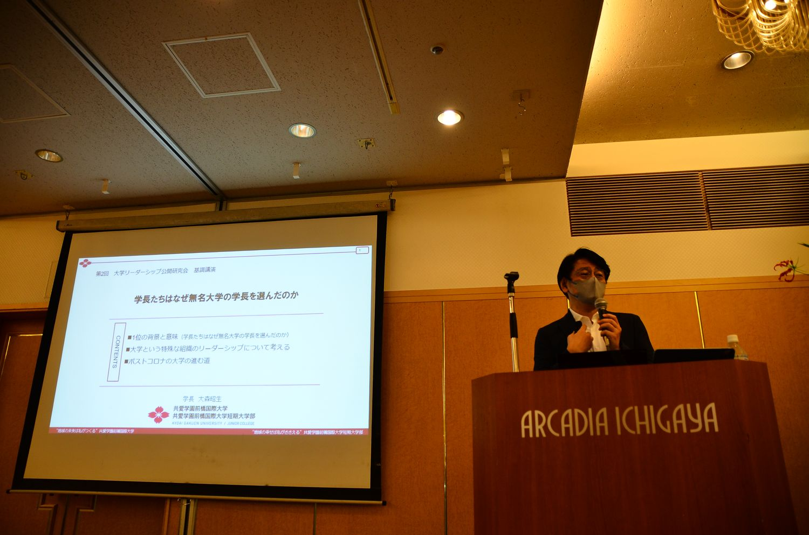
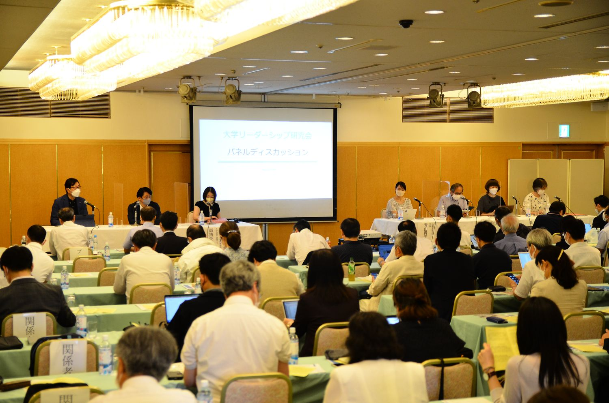
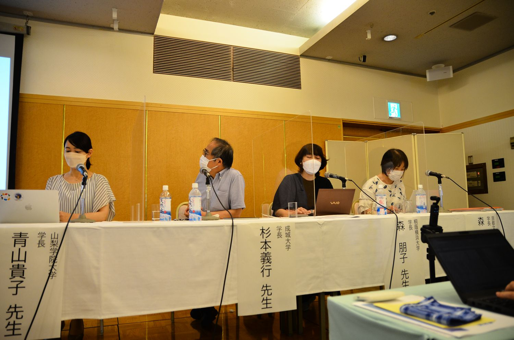

全国の大学で、これまで教育改革を推進してきたリーダーが学長に就任する事例が増えています。学長に求められるリーダーシップや、教育改革リーダー学長が見据える教学ビジョンや将来の大学像をテーマに開催しました。『AERA MOOK 大学ランキング2023』で学長から注目される学長1位となった大森昭生学長の基調講演、『学長リーダーシップの条件』等の著作を持つ両角亜希子東京大学教授の特別講演、教育改革リーダーから学長に就任した新学長4名（うち女性学長3名）によるパネルディスカッションを行いました。



| 日時 | 2022年7月9日（土） 13:30〜16:00 |
|---|---|
| 会場 | アルカディア市ヶ谷 私学会館 5階（穂高） |
| 定員 | 90名 |
| 参加費 | 2,000円 |
| 主催 | 大学リーダーシップ研究会 |
| 共催 | 協賛：学校法人河合塾、株式会社リアセック、株式会社内田洋行、株式会社シンクアップ、株式会社Prima Pinguino |
| 参加者 | 124名（一般参加112名／主催・事務局7名／登壇者5名） |
参加者数は、研究会が保有する第1〜9回の統合参加者データ（v13）にもとづく集計です。申込記録を基礎としているため、当日の実数とは若干の差がありえます。
パネリストの方々からは、それぞれの大学の取組事例、学長としての考え方・価値観、リーダーシップの発揮の方法についてお話しいただきました。「ど真ん中に学生を置く」という理念や、「積極的な妥協」「ゆっくり急ぐ」といった実践的アプローチは、多くの共感を得ました。カリスマ的なリーダーシップではなく、対話と共感を基盤とした新しいリーダーシップモデルへの気づきが得られています。
学長という職の実像が見えたことへの言及が最も多く、「学長職の困難を言語化できた」という趣旨の記述が複数ありました。登壇した学長全員が学生中心を語ったことへの驚きと共感も目立ちます。一方、パネルディスカッションの登壇者が多く一人あたりの時間が短かったという指摘が複数あり、評価（4.20）とも一致しています。
| 研究会全体の満足度 | 4.65 | |
|---|---|---|
| 基調講演 | 4.50 | |
| 特別講演 | 4.44 | |
| パネルディスカッション | 4.20 | |
| 仕事との関連性・有用性 | 4.56 |
参加者アンケートの回答は57件（回答率46.0%）です。満足度は5段階で、数値が大きいほど高い評価を示します。